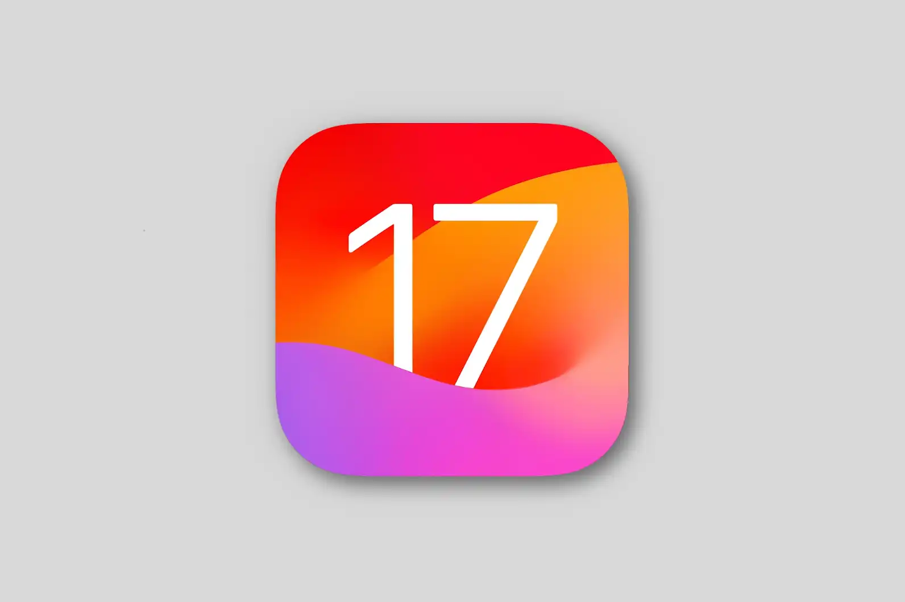

Introduction
Apple introduced iOS 17 to the public at their latest WWDC event on Monday June 5th. During the presentation Apple announced several new features. In this blog post we will dive in and highlight some of those new features!

Messages
Apple has added a number of updates to the messages app. You are now able to see a transcript of audio messages right in the app. Another new feature is called “Check In.” This feature will allow your friends and family to be notified when you have arrived at your destination. Lastly, a new catch-up arrow lets you jump to the first message you haven’t seen in a conversation. And now you can swipe to the right on any message to send a reply.
FaceTime
One of the coolest features coming to iOS 17 is the ability to leave a video message when someone doesn’t answer you FaceTime call. Apple has also added the ability to FaceTime through Apple TV using your iPhone as the camera.
StandBy
StandBy is a new full screen experience on your iPhone. StandBy gives you glanceable information designed to be viewed from a distance. Turn your iPhone into a clock, showcase special moments from your photos, and get the right information at the right time with widget Smart Stacks.
Interactive Widgets
Apple has finally added the ability to interactive with widgets on the home screen. You can now pause and play music, dim the lights, check off to-do list and more right from the home screen.
NameDrop
Another cool feature coming to the iPhone is called “NameDrop.” This gives you the ability to hold your iPhone near someone else’s iPhone or Apple Watch4 to share contact information. You’ll both be able to choose the specific phone numbers or email addresses you want to share, and you can share them along with your Contact Poster instantly.
Journal App
A new app coming to the iPhone will be called “Journal.” This app is what you would expect but with some cool features. You can capture and relive some life moments. You can add photos, music, audio recordings, workouts and more to your daily journal.
Maps
A big new feature coming to Apple Maps is the ability to download maps and use them offline. You can select an area of the map to download and will be able to get turn-by-turn directions for driving, walking, cycling, or riding transit.
Compatible Devices
- - iPhone 15
- - iPhone 14
- - iPhone 13
- - iPhone 12
- - iPhone 11
- - iPhone XS
- - iPhone XR
- - iPhone SE(2020)
- - iPhone SE(2022)
Release Date
There is no set date for the release of iOS 17, but users can expect the update to be released to the public in September 2023. However, if you want to get your hands on iOS 17 early you can do so by signing up for Apple’s beta program. You can sign up for the beta program here: Apple Beta Program